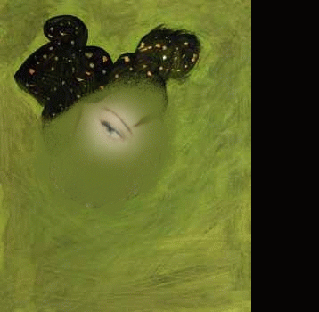

|
|
|
|
|  | ||||
| Ka�t���m yer herde sen vard�n ve iyi ki vard�n ve VARSIN.
F�glerle seni mutsuz ettim biliyorum. Ama kendimden bile ka�arken sana ula�mam nas�l olacakt� halen bunu bilemiyorum. Bana hayat�m�n en de�erli emosyonunu b�rakt�n, bunu yaparken de ger�ekten ama ger�ekten cesur ad�mlar att�n. Bunlar� takdir etti�imi verbalize etmeyi�im, sanma inanmad���mdan, ama bir kere istikamet �at��ma olunca insan bunu yapam�yor. bir keresinde sana beni en �ok sen sevdin demi�tim, �imdi ise i�tenlikle hayk�r�yorum seni en �ok seven insan benim. sadece seni, saf senli�i, her�eyiyle benim olmas�n� istedi�im ama h�z�nden ba�ka �ok az �ey verdi�im o g�zlerini en �ok seven benim. |
||||
| devam edecek.................... | ||||
| finale partos uno |
| B.B.
2003
|